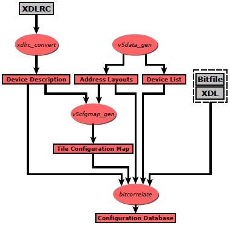

Application data flow overview
BIL consists of two distinct toolchains:

Toolchain for FPGA analysis | The FPGA analysis toolchain is used to initially analyze a specific FPGA type, thus enabling subsequent bitstream reversals. As input the FPGA's XDLRC description, a bitstream targeting this device, and the XDL version of the bitstream is needed. The results will be written into several files used by the bitstream reversal toolchain. |

Toolchain for bitstream reversal | The bitstream reversal toolchain takes a bitstream and reverses it to XDL. At the moment only inter-tile PIPs will be recovered; intra-tile PIPs and configuration options of the primitive sites are still missing. Though technically possible, no net reconstruction is performed due to the missing intra-tile PIPs. |
Directory structure overview
The directory structure of the whole library is as followed:
- bin: Compiled programs (and all binary output from compiler and linker).
- data: Data files needed by the BIL applications bit2xml, bitextract, and bitreverse. See also Data provided with BIL.
- doc: The documentation generated by doxygen.
- lib: The BIL static library.
- project: All project files (for BIL, and for doxygen)
- scripts: Batch files (windows only) for generating the data files, creating the testbase, and running tests.
- src: The source code of BIL.
- test: An exhaustive testbase for testing the various BIL programs. See also Data provided with BIL.
The source code folder is further subdivided into the various modules of BIL:
- application: The applications bit2xml, bitextract, and bitreverse.
- bitfile: Access to the Xilinx bitfile format.
- bitstream: Model of the bitfile's packetstream.
- cfgdecode: Decoding of raw configuration data by using a bit mapping database.
- configuration: Addressing of configuration memory.
- correlation: Correlation of a XDL design and the associated configuration raw data (in order to fill a bit mapping database).
- datagen: The applications bitcorrelate, v5cfgmap_gen, v5data_gen, xdlrc_convert, that create data files needed by the three main applications.
- deviceinfo: Container for device related data as name and ID.
- exception: Very basic exception class.
- mappingdb: The database model for holding the configuration bit mapping.
- packetprocessor: Packetprocessor emulator for executing the packetstream and extracting the configuration raw data.
- serialization: Functions for serializing various classes.
- test: The program xdlcmp for comparing two XDL designs.
- util: Various util functions (e.g. CRC calculation, endianess conversion, ...)
- xdl: XDL data model and parser.
- xdlrc: XDLRC data model and parser.